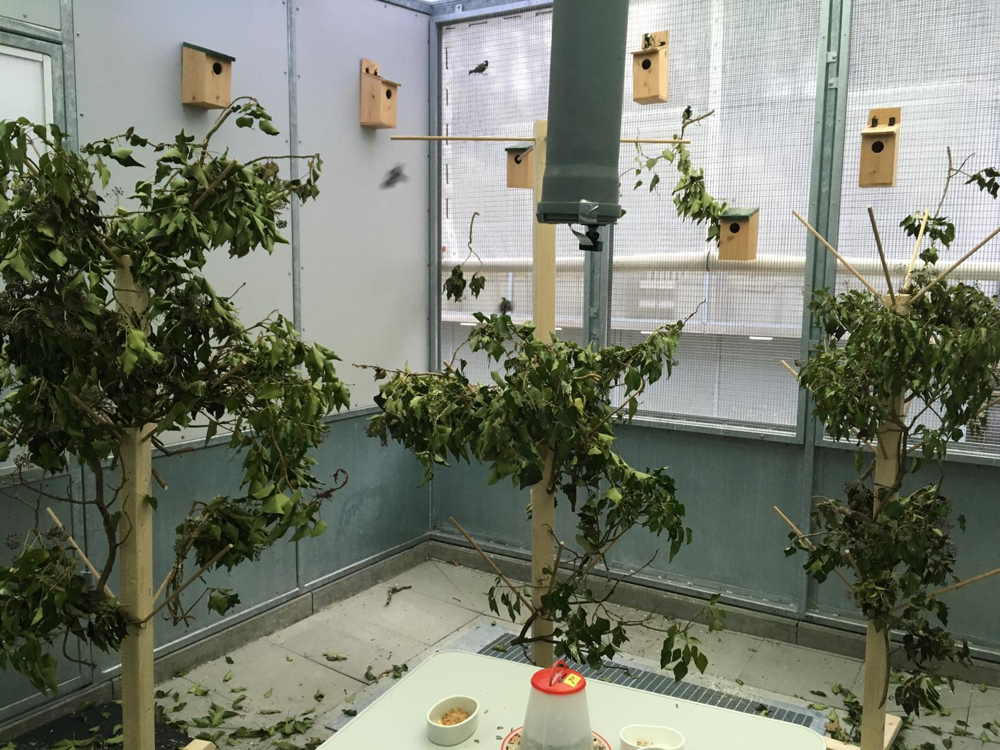

The interaction of
learning rules and population turnover
can drive cultural evolution
Michael Chimento, Lucy M. Aplin
Research methods
Captive diffusion experiments
Automated data collection
Computational modeling
Social factors and culture
Social networks are the substrate of culture1
Culture is responsive to social structure, e.g. network size and architecture2,3,4
What about social processes, e.g. gradual replacement of individuals?

Turnover and adaptive evolution
The introduction of naive individuals is a requirement for cultural evolution
Turnover can:
- Increase behavioral innovation/noise available for selection1
- Improve sampling of available behavioral space2,3


- Sasaki et al. 2017
- Warner 1988
- Warner 1990
Turnover can drive cultural selection
Compared to static populations of tits, turnover populations selected for a more efficient foraging strategy1
Experienced birds were innovating, immigrant birds were adopting the innovation.
Conclusion: turnover can be a mechanism for cultural change in populations of behaviorally conservative learners.

- Chimento et al. 2021
Outstanding questions:
- What's the role of reinforcement learning in cultural evolution?
- How do differences in magnitude and rate of turnover influence culture?
Reinforcement learning rules influence diffusion dynamics
Developed an ABM that combined sub-models of acquisition and production.1
Simulated diffusion of novel behavior that competed against an established tradition.
Conducted a sensitivity analysis across many different combinations of RL rules for production.
Assessed performance of inferential NBDA and EWA analyses when acquisition is conditioned on production.
- Chimento et al. 2022 (Proc. B)
Reinforcement learning rules influence diffusion dynamics
Different rules for production impacted diffusion rate, as well as divergences between acquisition and production.
High levels of divergence made it more difficult to infer transmission mechanisms (NBDA).
Heterogeneous knowledge states made it more difficult to infer learning rules (EWA).

- Chimento et al. 2022 (Proc. B)
What mechanisms link turnover to cultural evolution?
Extended this model to include social dynamics: turnover tempo + magnitude.
Residents began with knowlege of low payoff tradition, but a higher payoff alternative could be innovated.
Compared behavioral frequencies and knowledge states to static populations.
Effect of turnover regimes on relative efficiency
Each cell is colored by relative effiency compared to static populations (white).
We found neutral, optimal and suboptimal regimes compared to static populations.
The effect of regime depended on network size, structure, behavioral transmissibility, and learning rules.
- Chimento & Aplin 2022 (bioRxiv)

Information loss links turnover to cultural evolution
Polymorphic agents declined as regimes increased in intensity.
Optimal regimes contained highest levels of monomorphic agents holding the high payoff behavior.
Agents held exaggerated expectations about both behaviors.
- Chimento & Aplin 2022 (bioRxiv)

Take home:
Experimental + theoretical support for the hypothesis that naive individuals can drive adaptive cultural evolution simply by being better samplers.
The effects of turnover depends on other features of the network and learners.
Turnover is a double edged sword: information loss can also lead to extirpation.
Traps at longer time-scales: repertoire best fit to previous enviromental state.
Speculation: fission-fusion predicted to evolve in white-noise environment1, while turnover is perhaps most beneficial in red-noise environment. Pressure for evolution of weak turnover in red noise environments in socially learning species?
- Sueur et al. (2011)
Thank you
 Lucy Aplin
Lucy Aplin
 Gustavo Alarcon-Nieto
Gustavo Alarcon-Nieto
 Brendan Barrett
Brendan Barrett
 Anne Kandler
Anne Kandler

@evogom